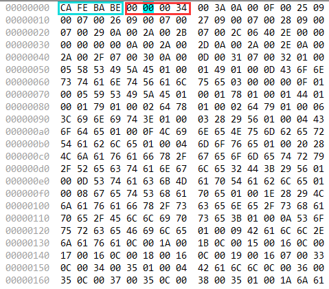
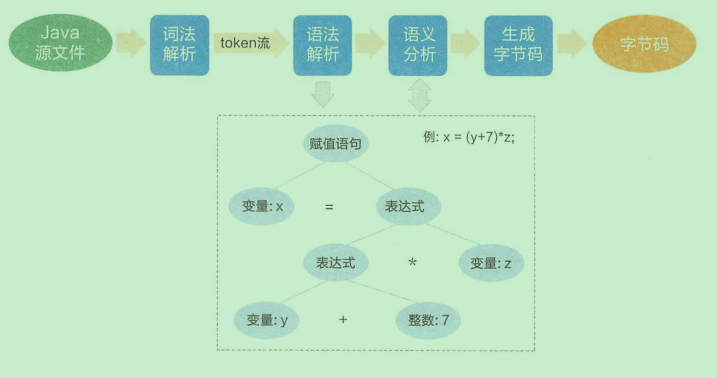
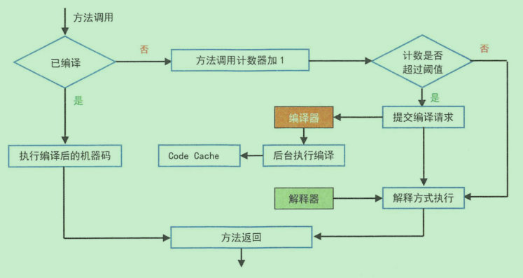

JVM-5-Java字节码
如果一个程序因为不同的硬件平台需要编写多套代码，这是十分崩溃的。Java的使命就是一次编写、到处执行。在不同操作系统、不同硬件平台，均可以不用修改代码即可顺畅地执行，如何实现跨平台？有一个声音在天空回响：计算机工程领域的任何问题都可以通过增加一个中间件层来解决。因此，中间码应运而生，即“字节码”。Java所有的指令有200个左右，一个字节(8位)可以存256种不同的指令信息，一个这样的字节称为字节码(Bytecode)。在代码的执行过程种，JVM将字节码解释执行，屏蔽对底层操作系统的依赖；JVM也可以将字节码编译执行，如果是热点代码，会通过JIT动态地编译为机器码，提高执行效率。如下图所示，十六进制表示的二进制流通常是一个操作指令。起始的4个字节非常特殊，即绿色框的 cafe babe 是 Gosling 定义的个魔法数，意思是 Coffee Baby ，其十进制值为 3405691582。它的作用是标志该文件是一个 Java 类文件，如果没有识别到该标志，说明该文件不是 Java 类文件或者文件已受损，无法进行加载。而红色框代表
当前版本号，Ox34 的十进制为 52 ，是 JDK的内部版本号

我们编写好的.java文件是源代码文件，并不能交给机器直接执行，需要将其编译成为字节码甚至是机器码文件。那么静态编译器如何把源码转化成字节码呢，如下图所示：

词法分析是通过空格分隔出单词、操作符、控制符等信息，将其形成token信息然后流传递给语法解析器；在语法解析时，把词法解析得到的token信息流按照Java语法规则组装成一颗语法树，如图虚线框所示；在语义分析阶段，需要检查关键字的使用是否合理、类型是否匹配、作用域是否正确等；当语义分析完成之后，即可以生成字节码。
字节码必须通过类加载过程加载到JVM环境后，才可以执行。执行有三种模式：
- 解释执行；
- JIT编译执行
- JIT编译与解释混合执行(主流JVM默认执行)。
混合执行模式的优势在于解释器在启动时先解释执行，省去编译时间。随着时间推进，JVM通过热点代码统计分析，识别高频的方法调用、循环体、公共模块等，基于强大的JIT动态编译技术，将热点代码转换成机器码，直接交给CPU执行。JIT的作用是将Java字节码动态编译成可以直接发送给处理器指令执行的机器码。流程如下图所示：
